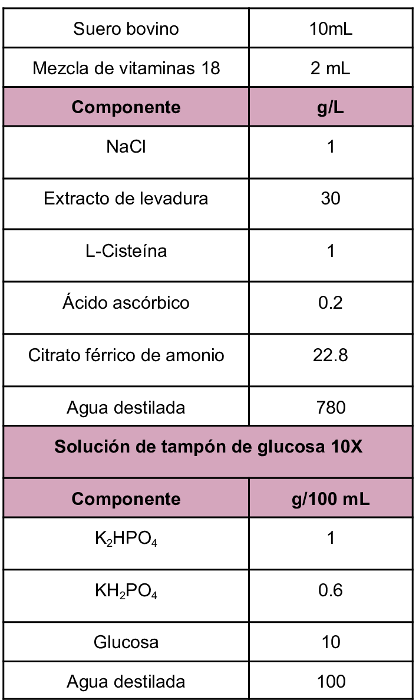

Se trata de un medio libre de caseína compuesto de caldo nutritivo, vitaminas y suero. Es un medio utilizado en el cultivo de
Entamoeba histolytica, Giardia intestinalis y Trichomonas vaginalis.
Composición
Se trata de un medio libre de caseína compuesto de caldo nutritivo, vitaminas y suero. Es un medio utilizado en el cultivo de
Entamoeba histolytica, Giardia intestinalis y Trichomonas vaginalis.
Composición

Diamante,L., Clark, C. & Cunnick, C. (1995) YI-S, a casein-free medium for axenic cultivation of Entamoeba histolytica, related Entamoeba, Giardia intestinalis and Trichomonas vaginalis. https://pubmed.ncbi.nlm.nih.gov/7496385/
ATCC (s.f.) Medium: 1978 YI-S medium. https://www.atcc.org/-/media/product-assets/documents/microbial-media-formulations/1/9/7/8/atcc-medium-1978.pdf?rev=87449018a0e44fd399f16919948ab914&srsltid=AU7gw4UTBiNxidHl4K9ugOIV7dOC5QbVozoJl2aihLsRBxTqVi2VprOM